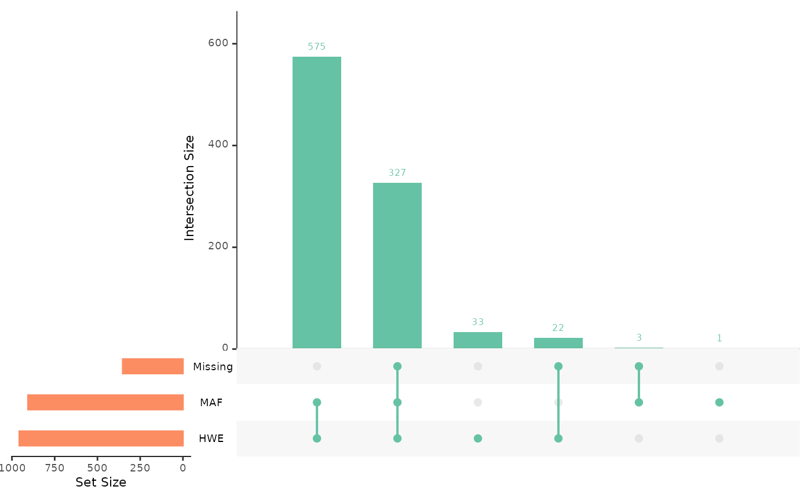
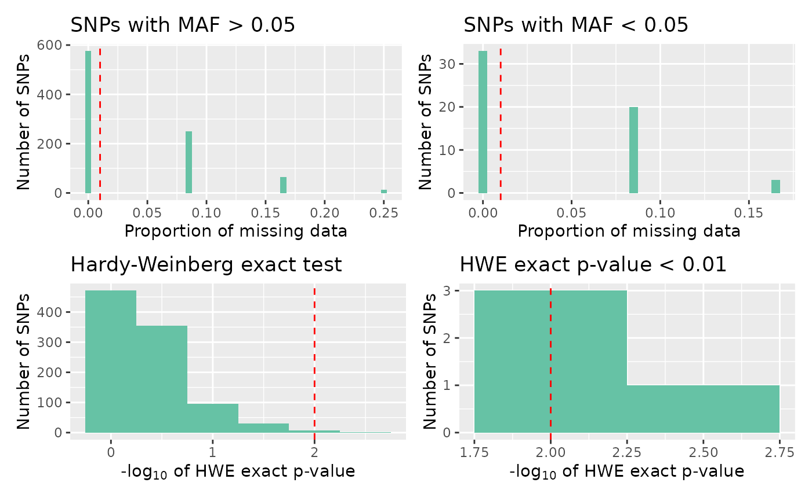
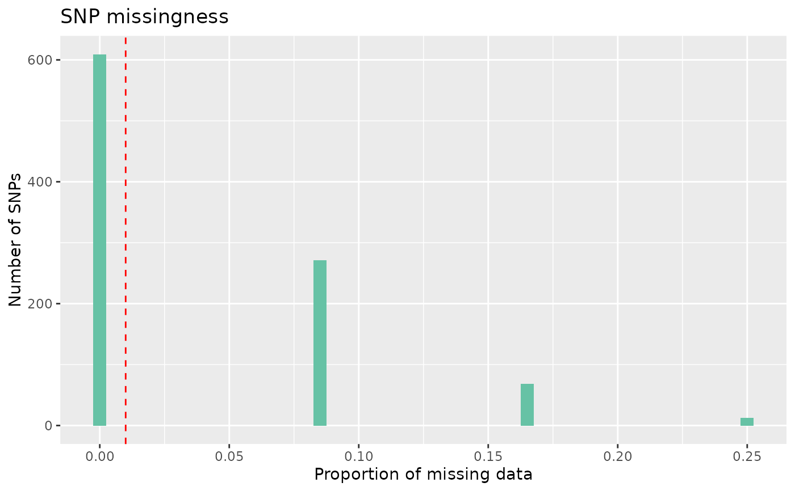
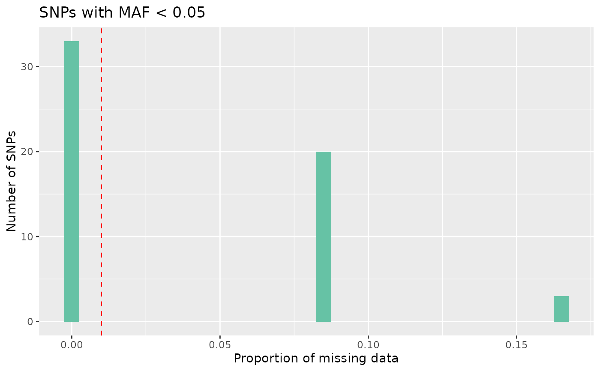
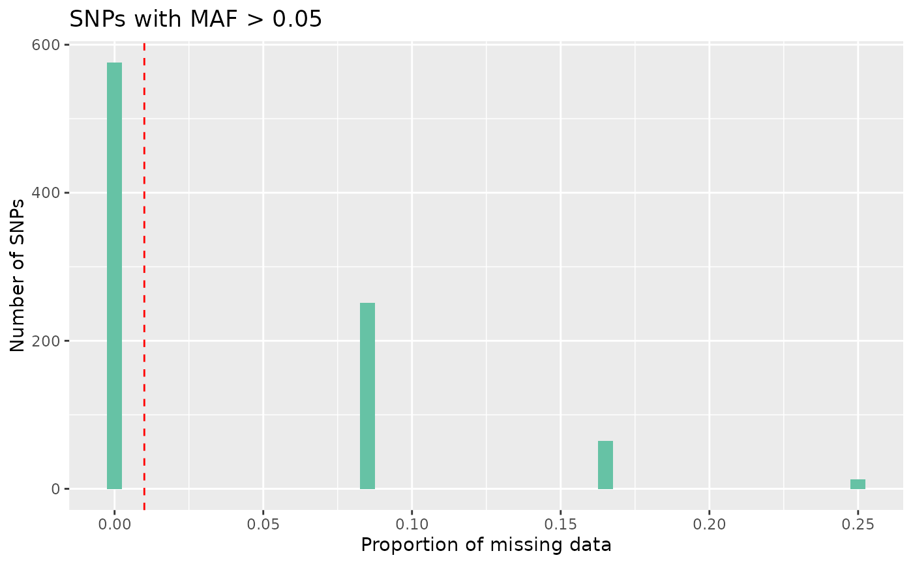
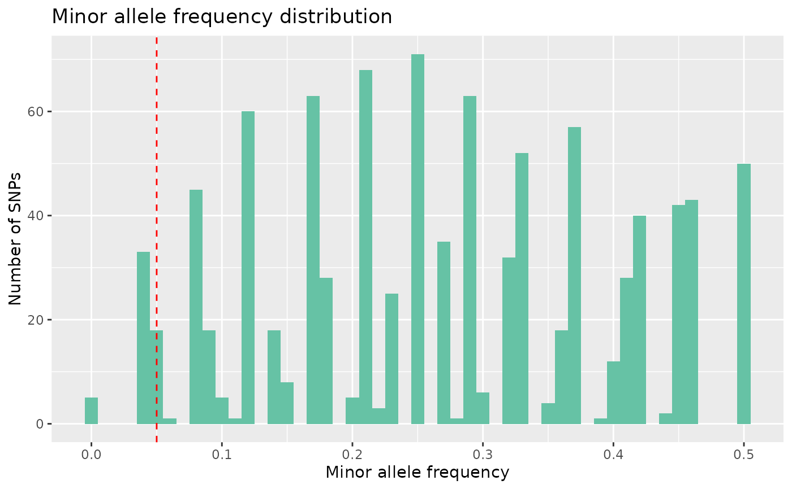
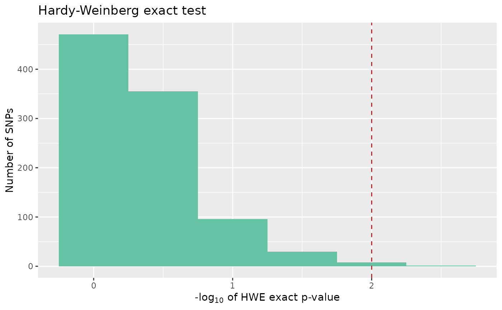
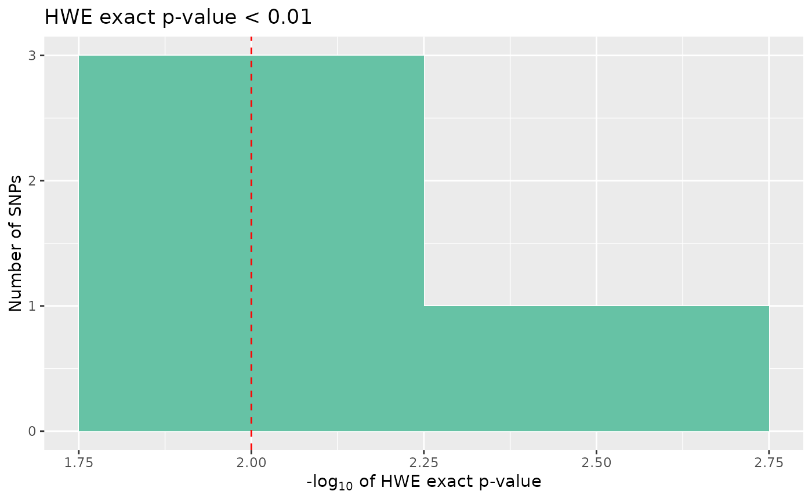

For qc_report_loci, the following types of plots are available:
overview: an UpSet plot, giving counts of snps over the threshold for missingness, minor allele frequency, and Hardy-Weinberg equilibrium P-value, and visualising the interaction between theseall: a four panel plot, containingmissing high maf,missing low maf,hwe, andsignificant hweplotsmissing: a histogram of proportion of missing datamissing low maf: a histogram of the proportion of missing data for snps with low minor allele frequencymissing high maf:a histogram of the proportion of missing data for snps with high minor allele frequencymaf: a histogram of minor allele frequencyhwe: a histogram of HWE exact test p-valuessignificant hwe: a histogram of significant HWE exact test p-values
Arguments
- object
an object of class
qc_report_loci- type
the type of plot (one of
overview,all,missing,missing low maf,missing high maf,maf,hwe, andsignificant hwe)- maf_threshold
default 0.05, a threshold for the accepted rate of minor allele frequency of loci
- miss_threshold
default 0.01, a threshold for the accepted rate of missingness per loci
- hwe_p
default 0.01, a threshold of significance for Hardy-Weinberg exact p-values
- ...
not currently used.
Details
autoplot produces simple plots to quickly inspect an object. They are not
customisable; we recommend that you use ggplot2 to produce publication
ready plots.
Examples
# Create a gen_tibble
bed_file <-
system.file("extdata", "related", "families.bed", package = "tidypopgen")
example_gt <- gen_tibble(bed_file,
backingfile = tempfile("families"),
quiet = TRUE,
valid_alleles = c("1", "2")
)
loci_report <- example_gt %>% qc_report_loci()
#> This gen_tibble is not grouped. For Hardy-Weinberg equilibrium, `qc_report_loci()` will assume individuals are part of the same population and HWE test p-values will be calculated across all individuals. If you wish to calculate HWE p-values within populations or groups, please use`group_by()` before calling `qc_report_loci()`.
# Plot the QC report overview
autoplot(loci_report, type = "overview")
#> Warning: `aes_string()` was deprecated in ggplot2 3.0.0.
#> ℹ Please use tidy evaluation idioms with `aes()`.
#> ℹ See also `vignette("ggplot2-in-packages")` for more information.
#> ℹ The deprecated feature was likely used in the UpSetR package.
#> Please report the issue to the authors.
#> Warning: Using `size` aesthetic for lines was deprecated in ggplot2 3.4.0.
#> ℹ Please use `linewidth` instead.
#> ℹ The deprecated feature was likely used in the UpSetR package.
#> Please report the issue to the authors.
#> Warning: The `size` argument of `element_line()` is deprecated as of ggplot2 3.4.0.
#> ℹ Please use the `linewidth` argument instead.
#> ℹ The deprecated feature was likely used in the UpSetR package.
#> Please report the issue to the authors.

# Plot the QC report all
autoplot(loci_report, type = "all")

# Plot missing data
autoplot(loci_report, type = "missing")

# Plot missing with low maf
autoplot(loci_report, type = "missing low maf", maf_threshold = 0.05)

# Plot missing with high maf
autoplot(loci_report, type = "missing high maf", maf_threshold = 0.05)

# Plot maf
autoplot(loci_report, type = "maf", maf_threshold = 0.05)

# Plot hwe
autoplot(loci_report, type = "hwe", hwe_p = 0.01)

# Plot significant hwe
autoplot(loci_report, type = "significant hwe", hwe_p = 0.01)
